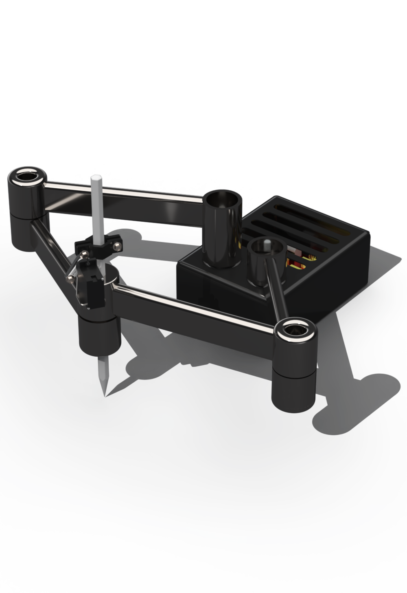
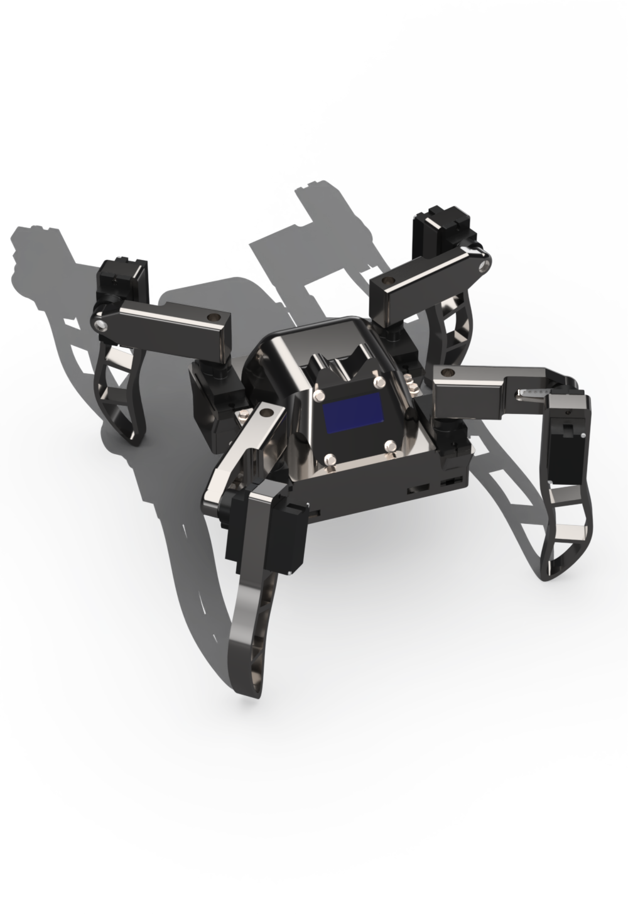
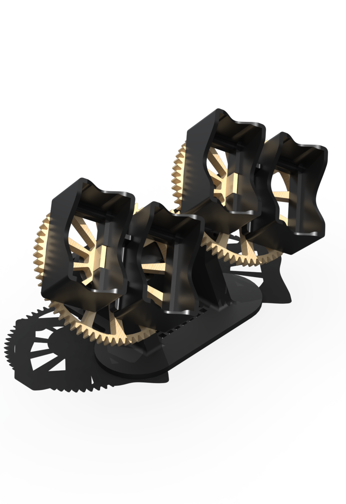
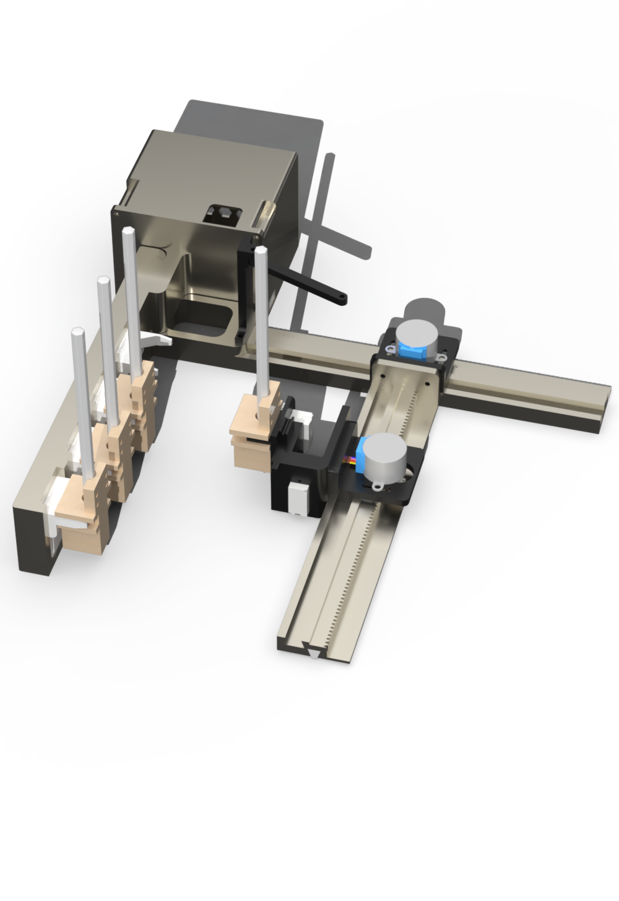

As a 19-year-old Mechanical Engineering student at TU Delft, I use this platform to showcase my personal projects, technical innovations, and my passion for problem-solving in the world of engineering.
Lucas Le
Implementing inverse kinematics was definitely the hardest part of this build. I ended up plotting out the arm geometry and drawing points using Desmos, though looking back I should have used a different software and approach. It was a massive learning curve, and there are plenty of improvements to make, like replacing faulty stepper drivers that kept disabling microstepping. Parallel robots like this are super interesting for high-speed pick-and-place automation and rapid assembly lines.

Hardcoding all the leg movements and walking patterns for this crab from scratch was honestly super tricky, but awesome to get working. Right now it runs off a standard powerbank, but I'm planning to upgrade it with smaller custom batteries to cut down weight and make it way more nimble. It's designed to climb over rough terrain in extreme conditions, so it could be super useful for rescue missions or field research.

I got tired of my automatic watches dying whenever I wasn't wearing them, so I decided to design my own winder. It runs on a 1:4 gear ratio with a cheap stepper motor to count the exact rotations. Taking into account the mechanical tolerances so the gears spun smoothly without jamming took quite a few prints. An improvement would be connecting it to Wi-Fi for smart scheduling and adding different winding modes.

Calibrating the X and Y axes to get consistent drawing outputs was definitely a tough challenge on this build. The machine connects via Serial and is controlled through a custom HTML interface where you can sketch 4-color designs, which get sent straight to the plotter as G-code. For future upgrades, I want to add automatic image-to-vector conversion and upgrade the drivetrain to eliminate gear backlash. The motion precision and custom G-code control translate really well to real-world applications in 3D printing, tool-changing machinery, and manufacturing efficiency.
